日本料理の楽しみは、四季折々の素材や器、盛り付けの変化にあります。
季節感を大切にし、今治を代表するお店として、お料理に心を込めています。
料理長の菅波は、京都の有名料亭で正統派の職人として修行し、その伝統を大切にしています。
私たちの料理は便利さだけでなく、本物の味や形を大切にし、時代を超えて愛される味わいを提供しています。
料理、もてなし、空間―五感すべてに訴えかけてくる日本料理の真髄がここにあります。
ぜひ、お越しいただき、季節ごとの美味しさと日本料理の本格的な味わいをご堪能ください。
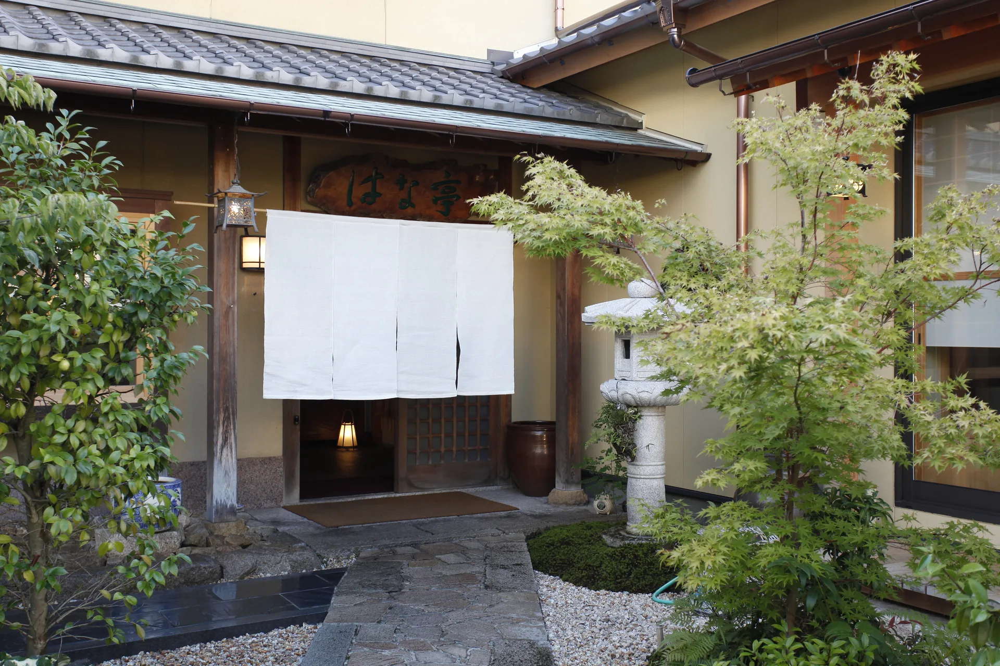
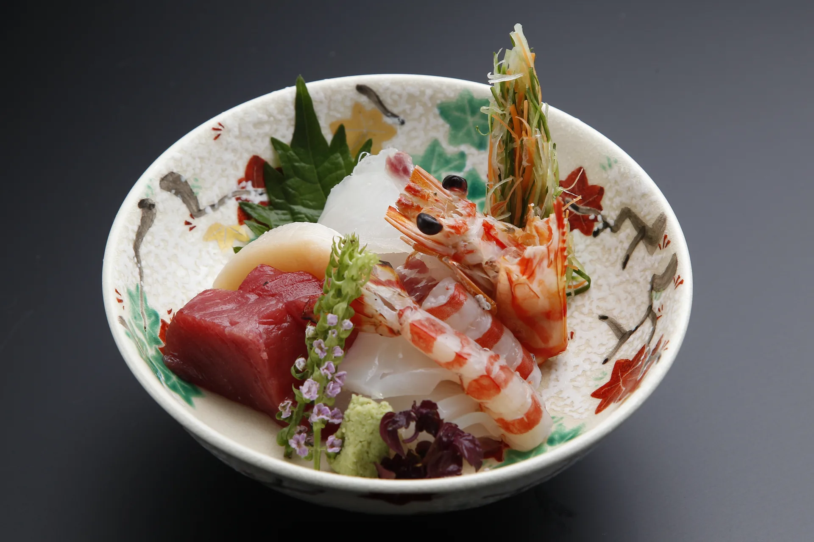
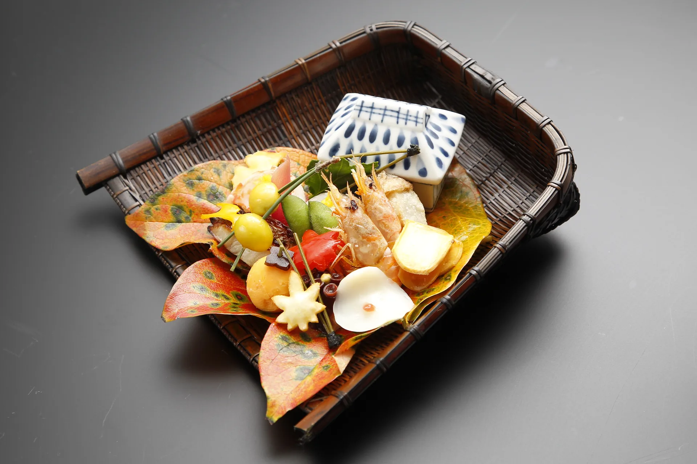
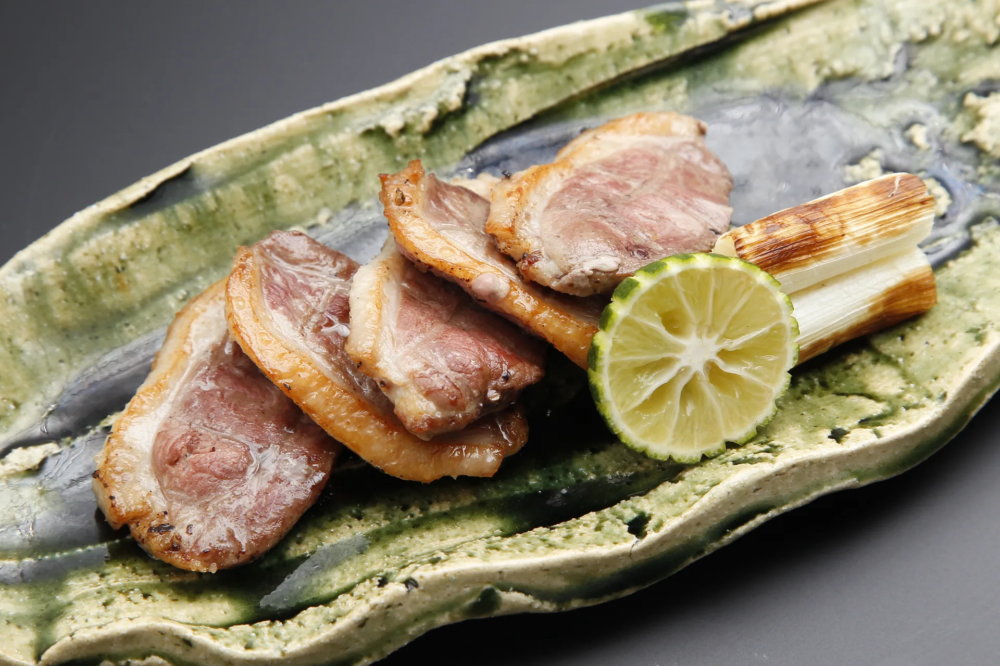
ランチコース
一般席（女子会・お食事会に） 3,800円〜（税別）
個室（お顔合わせ・法事・ご接待に） 6,000円〜（税別）
※税・サービス料別（個室は室料別）
※席によりお料理内容が異なります。
ディナーコース
一般席 6,000円〜（税別）
個室（お顔合わせ・法事・ご接待に） 8,000円〜（税別）
※税・サービス料別（個室は室料別）
※席によりお料理内容が異なります。
慶事・法事の折詰
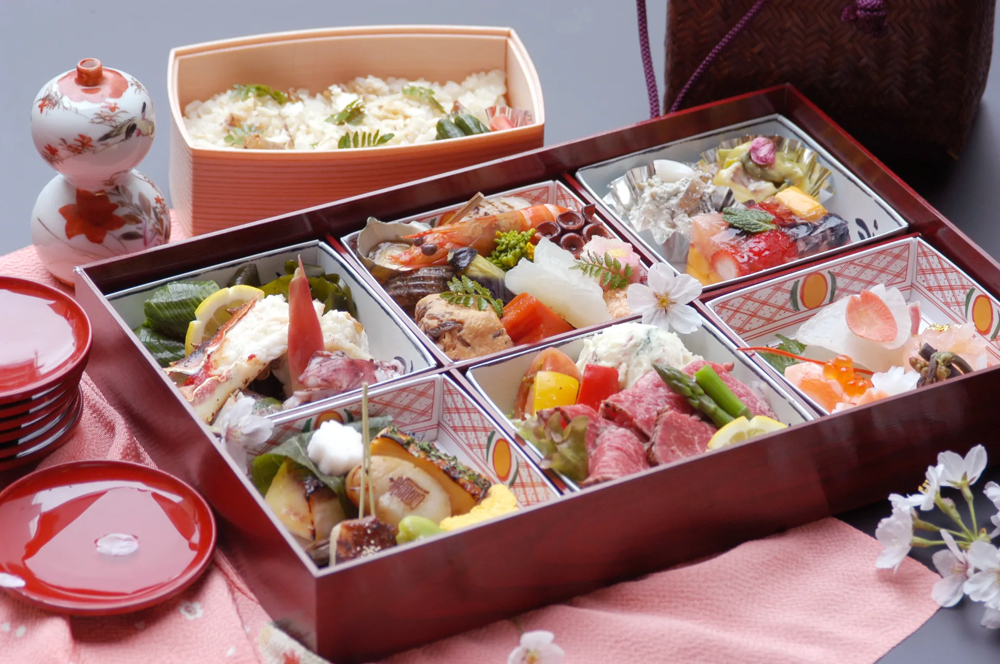
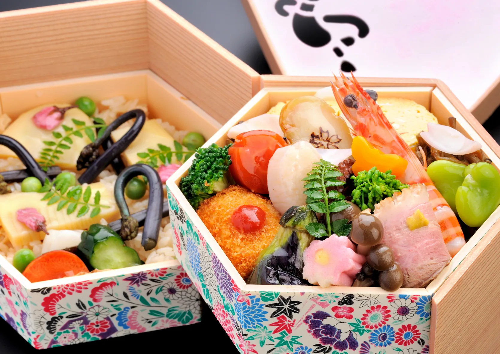
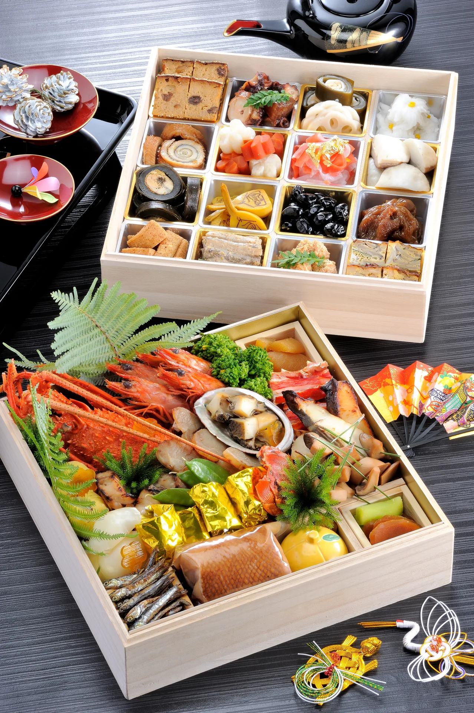
〜お店でいただく懐石膳をそのままに〜
6つに仕切られた箱(31cm×21cm)に
酢の物・炊き合わせ・和え物デザート・
焼き物・肉物・造りまで、季節の味覚をふんだんに
納めております。
ご飯物につきましては、ご相談いただけますと
巻き寿司、ちらし寿司、炊き込みご飯などにも
変更可能ですので、
お気軽にお申し付けください。
【お料理ご予算目安】
6,000円〜10,000円(税別)
※ご要望に充分にお応え出来ますよう、
お早め(3日前まで)のご予約をお願いしております。
お友達から聞いて...とおっしゃられる方が多いのですが、
よくあるご質問が、どんなお料理が出るのですか?というお問い合わせです。
はな亭には実際メニューらしいものは無く、あくまでお客様とお店との信頼関係によって成り立っています。
その上で精一杯気にいっていただけるよう努めて参ります。
内容はおまかせのコース料理が主体ですが、料理2~3品とお酒というご要望にも充分にお応えできます。
お電話でお気軽にご相談ください。
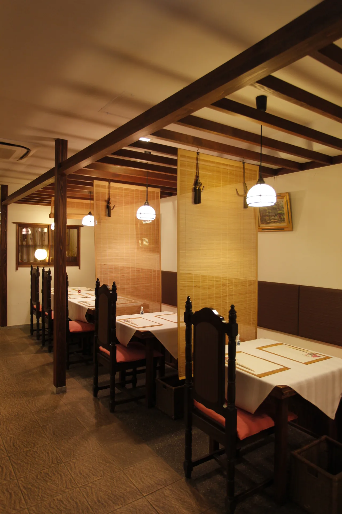
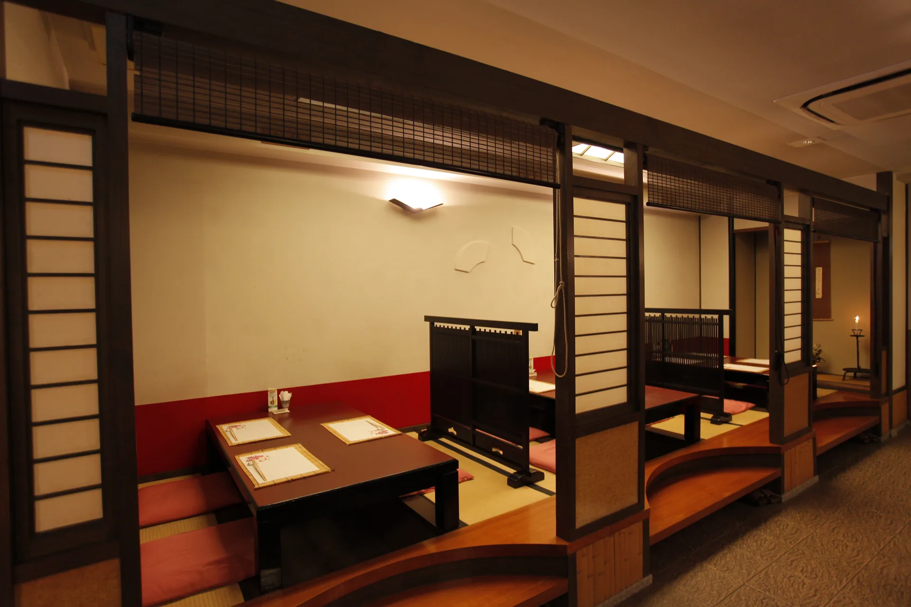
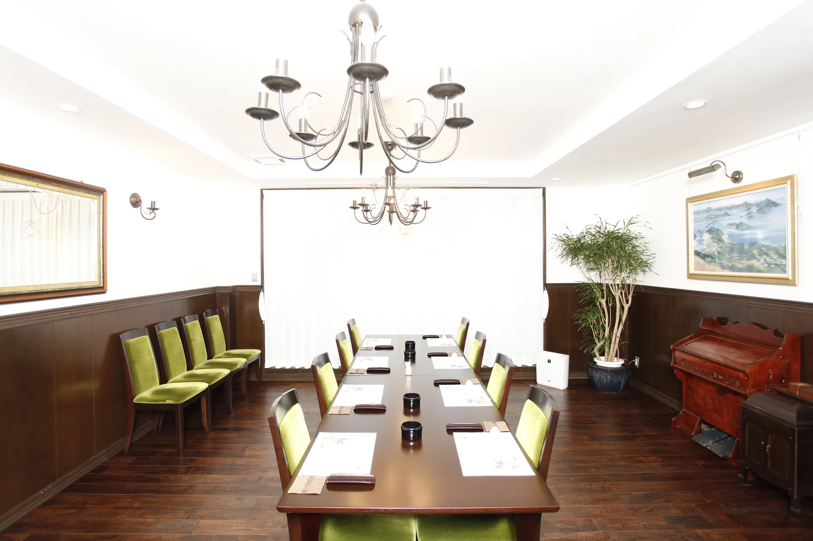
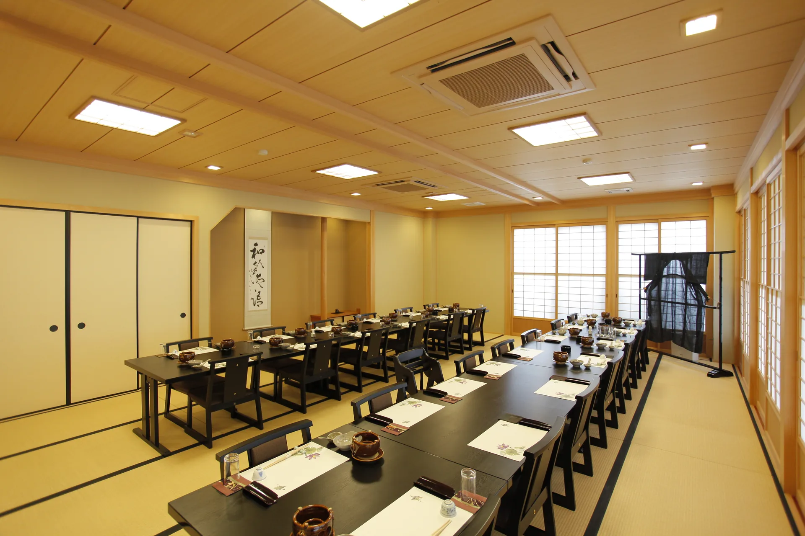
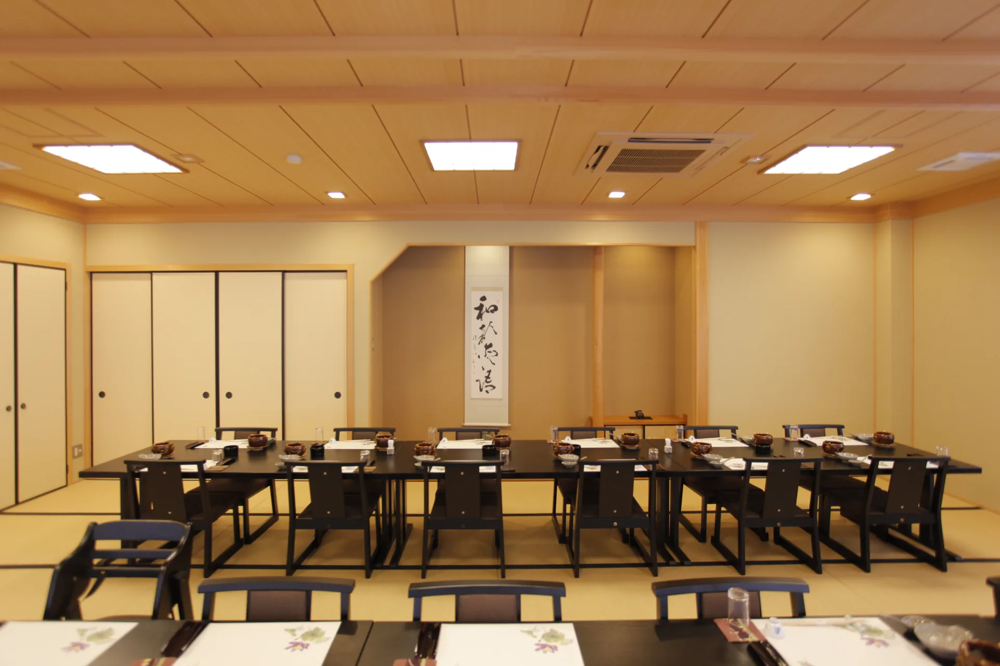
1階
新館 永楽 畳に椅子席:28名様
新館 胡蝶 洋室:12名様
掘込席 曙:6名様
掘込座敷 侘助 白玉 初嵐:それぞれ4名様
一般テーブル席:14席
2階
日光・月光（和室）:10名様
神楽（大広間）:40名様
併せて60名様
ご予約はお電話で
TEL：0120-85-0351
〒794-0024
愛媛県今治市共栄町2-2-41
定休日：不定休(日曜日の宵席は予約営業)
昼席：12:00～14:00(L.O 13:30)
宵席：18:00～22:00(L.O 20:00)
※時間外は、ご相談に応じます。
20台(店前横) バス可
※カード決済につきまして、
法人のみとさせていただいております。
ご了承の程よろしくお願い致します。